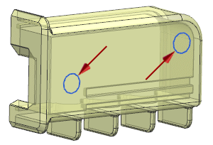
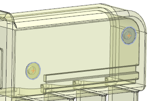
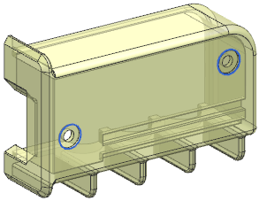

Add two counterbore holes
-
On the Feature toolbar, click Hole
 .
.
-
In the Hole dialog box, from the Type list, select General Hole.
-
In the Form and Dimensions group, from the Form list, select Counterbored.
-
Enter the following values.
-
C-Bore Diameter = 5
-
C-Bore Depth = 0.5
-
Diameter = 2.5
-
Depth Limit = Until Next
-
Boolean = Subtract
-
-
Select the centers of the two arcs.

A preview of the counterbore holes is available.

-
Click OK.
The counterbore holes are created.
